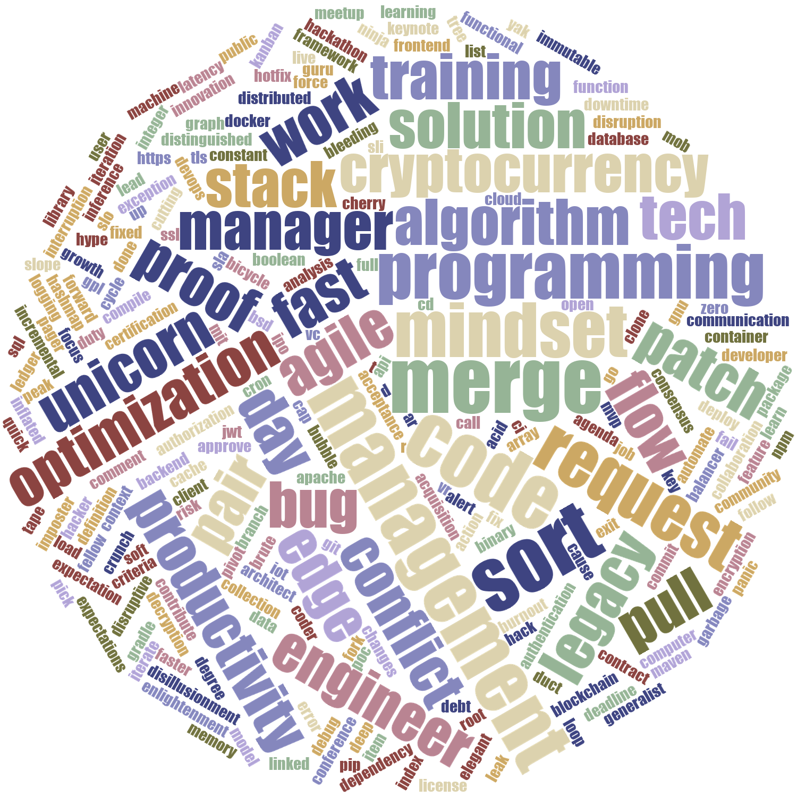
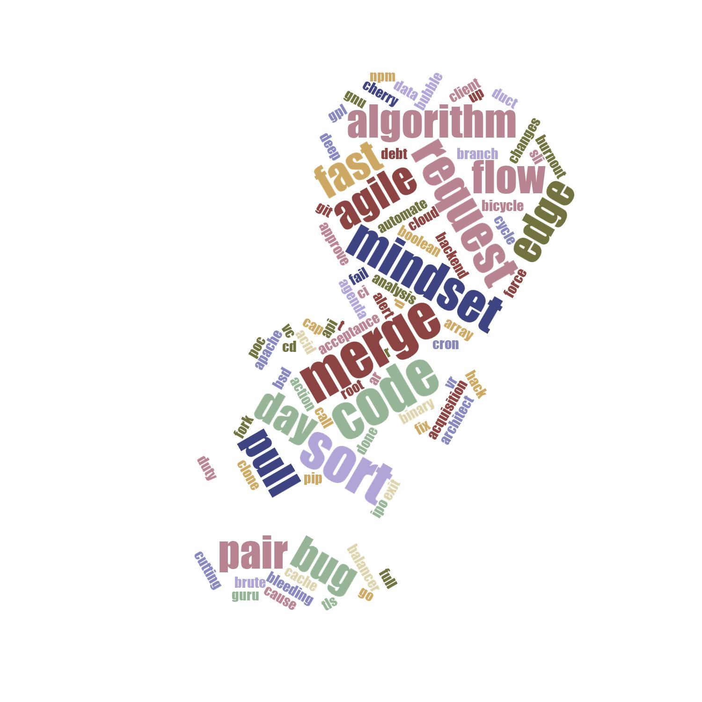
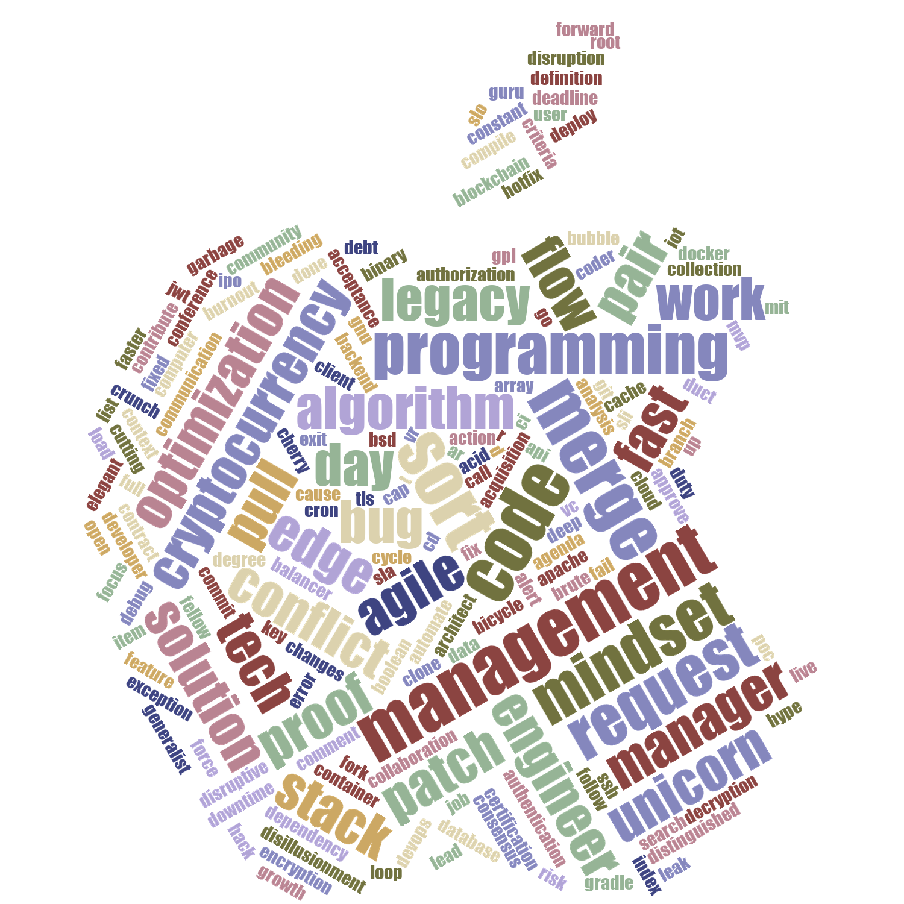
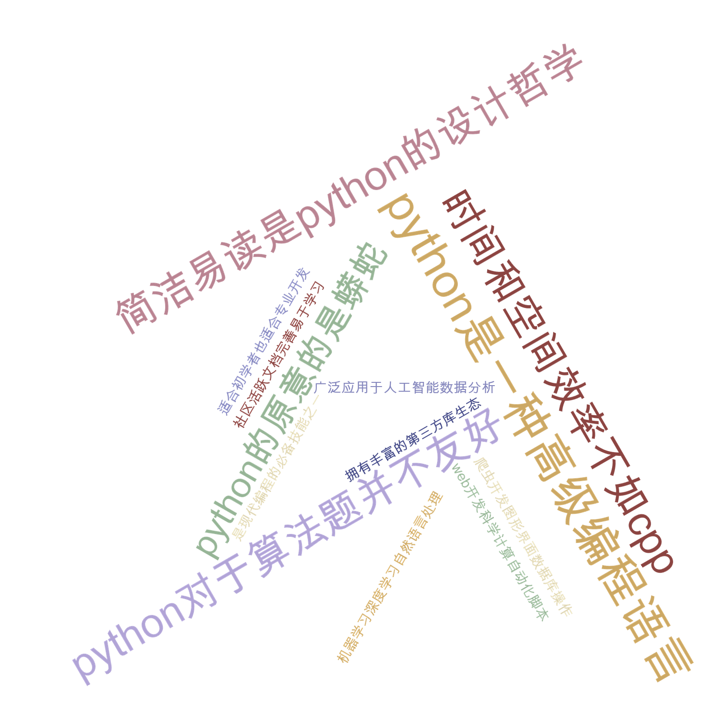
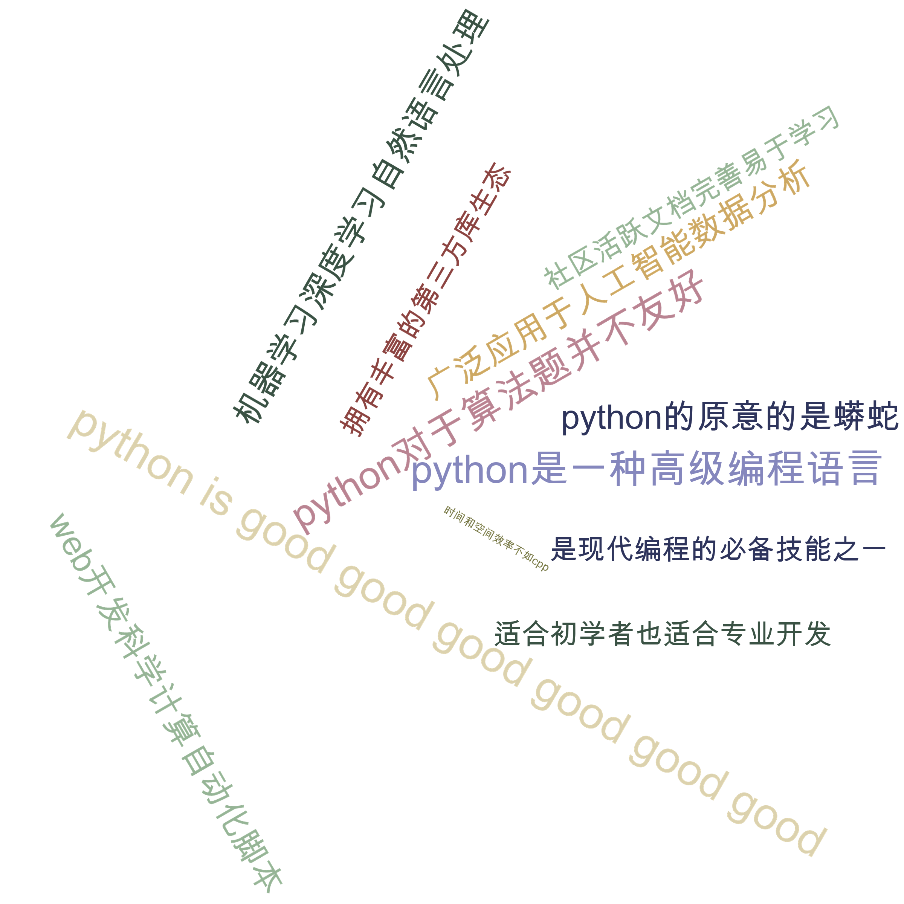

In this file, we will create a simple wordcloud using Python from scratch.
ps: python has a wordcloud library, but I can’t find even a 100% .py implementation in github, all use js to do it, so strange.
靠还真有这个仓库，官方还是太强了🤣，第一次搜索的时候忘记加空格了🌿,但我这个更好懂嘛🐶
What is a wordcloud?
A wordcloud is a visual representation of text data, where the size of each word indicates its frequency or importance.
All in all, we will do these steps:
|
|
early attempt (old version)
- You can find my old version in repo’s old_version directory.
- I initially treat each word as a rectangle object, and use a for loop to detect if collision happens. This need to check all placed words and most check is wasteful.
- Besides wasteful check, I also find that the collision detection based object’s bounding box is so tricky, when there is rotation, 完蛋.
- so the last effect is not so good, just support 90 and -90 degree rotation.
- Here is the old effect: (有点用但不多～)

New attempt (current version)
- In the new version, I use pixel level collision detection, that is, use a 2D array to represent the canvas, each pixel is either occupied or not.(each line can seen as a bitmask)
- This idea not only speed up the collision detection, but also make the rotation easy to implement, and even make latter mask support easier.
- Now let’s travel through the code file by file.
main1.py
- This is the main file, where we can make sense all process of wordcloud generation.
- You can select what words you want to ignore in to_remove list, and set some parameters like canvas size, max words count, font path, rotate angle, etc.
input1.py
- This file is used to read input text file, and process it to get word weights.
- It use re module to split text into words kind that you want.
- And notice that our weights compute is based not only on just frequency, but also the length of word, and the positive-negative sentiment score(which you also can customize the emotion list).
style1.py
- This file is used to select font size, color, rotation, mask.
- I recommend you to use this website to get some cool mask images(remember to select filled and black icon) and you will use function convert_transparent_to_mask to convert transparent part to white mask.
- At first, I use a soomth size mapping function to map word weight to font size, but the output effect is not good, all image looks stranger, so I change to a step function, set up six levels, and looks better.
- For color, you can see I tried so many map-func(some had been deleted😄), rgb,hsv, etc. I can firmly say all fails, all image looks stanger, so I imitate a nice pattern, and surprisingly with Impact font, 👍 👍 👍
- thanks to ics 😄 I use a font cache(a dict) to speed up font loading, or it will be so slow when many words exist.
- Same as said , rotation is also set up n levels, you can customize it.
- For mask, I try to extract the topic of input(太粗糙了，没用) to map with existing masks, or use fixed mask.
sprite.py
- This file is used to generate word sprite, that is ,from a 2D array of pixels to a list of bitmasks(each line is a bits),later will use it to do collision detection.
sprial1.py
- This file is used to generate spiral points,(a iterator that yield (x,y) points)， latter we will use archimedean spiral to place words from center to outside.
raster.py
- This file is used to convert a text to a 2D array of pixels.
There is a question, how to get acurate pixel representation of a text with a specific font?
here I use PIL’s ImageFont(getbbox) to get text bounding box(the lt point is (bbox[0],bbox[1]), the rb point is (bbox[2],bbox[3])),
then create a blank image with that size(bbox[2]-bbox[0], bbox[3]-bbox[1]), then use ImageDraw to draw text on that image at position (-bbox[0],-bbox[1]),and rotate the image if needed.
why 多此一举？ because some text has rotation which can’t directly use getbbox to solve.
So, we convert image to numpy array for latter use.
重难点分析😭(突然发现mac的表情包键用来加表情包很方便😆)
- bbox和anchor的爱恨情仇
- 尝试了三种写法
|
|
- 最后用的第一种，后两种经过实践发现会有偏差，只是大概对齐，我们要的可是精确对齐。
- now we explain why use -bbox[0], -bbox[1]
because when no anchor, this (x,y) is the position of painting start point,
and we can think bbox[0],bbox[1] is the offset from painting start point to left and top border of text bounding box.
打个比方：bbox[0]=-2,bbox[1]=8,绘制原点默认是(0,0),此时左边界是-2,上边界是8，当移动到(-bbox[0],-bbox[1])=(2,-8)时，左边界变为2+(-2)为0，上边界也变为(-8+8)为0，正好对齐。
（当然这个是我经过实测后的理解，可能不完全准确，但能说明问题问题🙋♂️）
place.py
- This file is used to place each word in the board.
- I use 6500 loops(avoid can’t find place forever), each loop get a new position by using our spiral iterator, then check if collision happens by using our board implementation.
board.py
- This file is used to represent the canvas board, and do collision detection and place word.
- It has a rows to represent each line of canvas, each row is an integer, each bit of integer represent a pixel(1 for occupied,0 for free).
- For collision detection, we just need to do bitwise AND between board row and word sprite row, if result is not 0, then collision happens.
- I also add a padding to move word sprite more outside, to avoid words too close.
- And when placing word, we just do bitwise OR to update board rows.
- I think this is the most clever part of this new version, make collision detection and place so fast and easy.😈
layout1.py
- This file is used to place each word in the canvas.
- just use all above modules’s functions and words that already selected style(font size, color, rotation), then place each word one by one.
final output
- Here is some final output examples:





some possible improvements
- because I finish this project for my vcl course assignment, so I didn’t spend much time polishing it.(绝对不是我懒😆),but there is no doubt that it isn’t as good as this implementation now.
- better input text getting and processing,like support pdf,docx file directly and better word segmentation(maybe use some nlp to split chinese text and better analyze sentiment)
- better color,size,rotation,font,mask? 交给设计师吧😄
- object control,now data structure I drop all placed words info after placing, if we keep them, we can do some interaction,like hover to highlight word, move word smoothly when regenerate.
- better placement algorithm, now just use archimedean spiral, maybe we can try other algorithms to make better use of space.
- auto parameter tuning, now all parameters are set by hand, maybe we can use some optimization algorithms to auto tune them according to some aesthetic metrics.For example, how to adjust canvas size,max words count, font size range, sprial step size, etc to make the wordcloud more beautiful, if you just use hand set parameters, 💩
- improve out demo website, now just a simple streamlit app, can be more beautiful and user friendly.
References & Inspirations
-
I learn from this article(The wordcloud invention by Jonathan Feinberg)
-
And learn from this implementation(Jason Davies),and hope to realize the effect like this website.